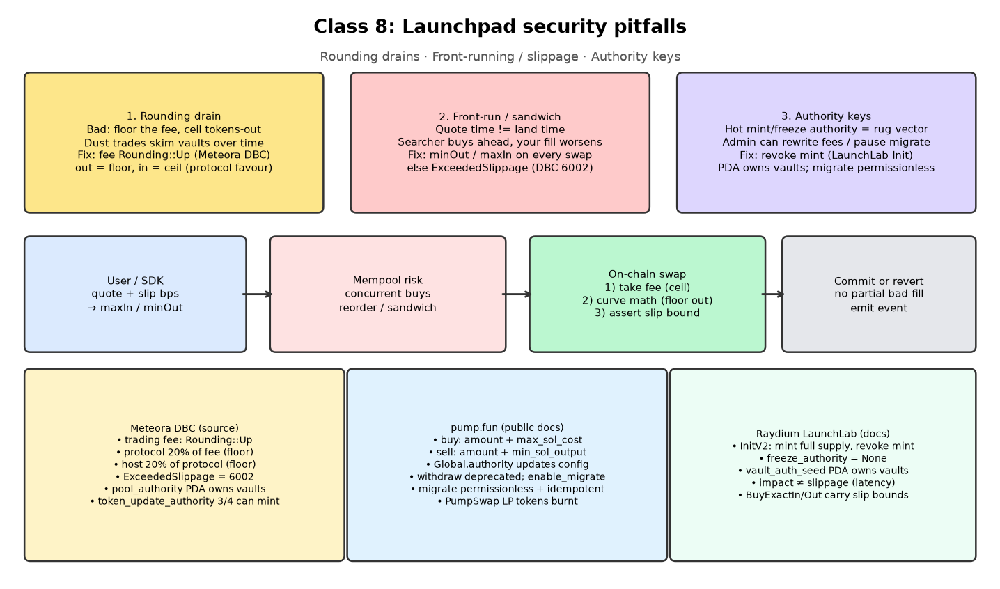

Part 6 · On-chain
Security pitfalls
A curve can pass every happy-path test and still lose money through bad fills, rounding, or a leftover authority key. Three stories, three rules.
1 Everyday analogy
At the market, three things go wrong for traders:
- A customer agrees a price, but by the time he pays, the trader charges more. He should have said "not more than ₦500".
- A trader's scale is off by a tiny amount in the customer's favour. One clever customer buys one tomato at a time, a thousand times.
- The landlord keeps a spare key to every shop "just in case". One night, the stock walks out.
On-chain, these are slippage, rounding, and authority keys.
2 Design question
- Alice is quoted 1,000,000 tokens for 1 SOL. Other buys land first, and she receives only 700,000 tokens for the same 1 SOL.
- Bob uses JavaScript numbers, rounds fees down, and rounds tokens paid out up. An attacker makes many tiny trades.
- Eve keeps her personal wallet as the token's mint authority "just in case".
For each story: what's the failure mode, and what rule should the on-chain program enforce?
Try to answer on your own first, in plain English. A gut answer is fine.
Reveal answer
| Story | Failure mode | Program rule |
|---|---|---|
| Alice | Front-running or sandwiching. Her quote was stale and nothing stopped a bad fill. | Every trade carries a user-signed limit (max_sol_cost / min_sol_output, or a minimum tokens out). The program reverts if it's breached. |
| Bob | Precision loss above , plus rounding in the trader's favour. Each tiny trade leaks 1 unit, and many trades drain the curve. | Integer math only (u64/u128 on-chain, bigint in TypeScript), checked arithmetic, and rounding in the protocol's favour: fees round up, payouts round down. Reject zero-output trades. |
| Eve | She can mint unlimited new tokens and dump them on buyers, which is a rug pull. | A program PDA is the mint authority (Meteora DBC's pool_authority is the mint authority Real: Meteora DBC repo), or the authority is revoked once the supply is minted. No freeze authority. |
3 Simple explanation
The common thread is that the program is the only thing you can trust. The website, the bot, and the creator can all be bypassed or can lie. So each protection has to be a check inside the instruction, and it has to run before any state changes.
- Slippage checks belong in the program, not in the UI.
- Rounding direction is a security decision, not a style choice.
- Authorities such as mint, freeze and upgrade are power. Either give them to a program PDA or remove them.
- Instructions are all-or-nothing. If any check fails, the whole transaction reverts.
4 The math
JavaScript numbers are exact only up to
but . In a number this becomes 3.219e+25, and the low digits are gone.
The cost of a rounding leak: if each trade leaks lamport toward the trader, then trades leak . With fees rounded up and payouts rounded down, the leak flips sign, and every trade leaves lamports in the curve.
5 TypeScript code
// Chapter 6 — three bugs and the rule that stops each one. OUR CLONE'S CHECKS.
export const MAX_SAFE = BigInt(Number.MAX_SAFE_INTEGER); // 9,007,199,254,740,991
/** Bob's bug #1: JavaScript numbers silently lose precision above 2^53. */
export function numberVsBigint() {
const asNumber = 1_073_000_000_000_000 * 30_000_000_000; // k with JS numbers
const asBigint = 1_073_000_000_000_000n * 30_000_000_000n; // k with bigint
return { asNumber, asBigint, exact: BigInt(asNumber) === asBigint };
}
/** Rule for Alice: the program, not the UI, enforces the user's limit. */
export function assertSlippage(actualCost: bigint, maxSolCost: bigint) {
if (actualCost > maxSolCost) throw new Error("ExceededSlippage");
}
/** Rule for Eve: after create, nobody may mint more. The program checks this. */
export function assertMintLocked(mint: { mintAuthority: string | null; freezeAuthority: string | null }) {
if (mint.mintAuthority !== null) throw new Error("MintAuthorityNotRevoked");
if (mint.freezeAuthority !== null) throw new Error("FreezeAuthorityNotRevoked");
}Download: security.ts · tested with npx tsx
k as number: 3.219e+25 | as bigint: 32190000000000000000000000 | exact? false
security: all checks passed6 TypeScript exercise
Write a fuzz test. Make 10,000 random buys and sells (random sizes from 1 raw unit up to 1M tokens) on a fresh curve from engine.ts. After every step, assert that realSolReserves is at least the SOL the curve would pay if everyone sold back right now. If you flip one rounding direction in the engine, the test should fail.
Show a solution
Start from the "1000 tiny round trips" block in code/engine.test.ts. Track the total tokens held by users. After each step, compute solForSell(curve, totalUserTokens) and assert that it's less than or equal to curve.realSolReserves.
7 Architecture diagram

